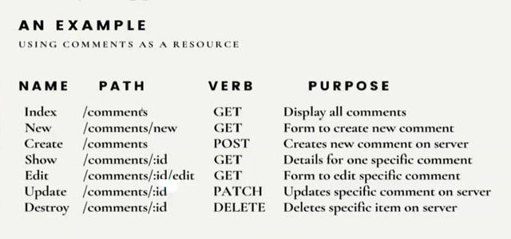

// Restful_Routing:
// ================
// REST - Representational State Transfer
// Its a software architectural style.
// A web service which uses this
// REST architectural pattern is called a RESTful WebService.
// As per REST architectural pattern, we follow below pattern
// while defining the routes:

// --------------------------------------------------------------------------------------
// Now let's create our sample app to explain RESTful Routing:
// Here also, we have installed ejs, express, nodemon npm packages,
npm i ejs express nodemon
// However, we will need one more npm package here,
// which is method-override:
npm i method-override
// Please note that we need package "method-override" to
// send PATCH, DELETE, and some other requests.
// Because by default, our browsers only support
// GET and POST requests.
// PATCH request is used when
// we want to edit a data object.
// See index.js , index.ejs , edit-comment.ejs on how we can use it
// to send PATCH and DELETE requests.
// YES!! we need one more npm package called "uuid"
npm i uuid
// UUID = Universally Unique Identifier
// This is used to give unique ids to our data objects.
// See index.js on how we can use it to create unique ids.
// now, create index.js inside your project directory
// and try to understand how we are implementing
// Restful_Routing(read the comments).
// Also, create folder "views" inside your project directory,
// and inside views folder, create folder comments and inside comments folder:
// 1> Create index.ejs for displaying all comments.
// 2> Create new_comment.ejs for displaying
// form to create a new comment.
// 3> Create show_comment.ejs for displaying
// a particular selected comment.
// 4> Create edit_comment.ejs for displaying
// a form to edit a particular selected comment.
// Once we have accomplished this, we should notice that
// we have implemented the CRUD functionalities:
// C-Create(comment/new_comment),
// R-Read(/comments & /comments/:id),
// U-Update(/comments/:id/edit),
// D-Delete (/comments/:id)
// Thank You and Your Welcome :)